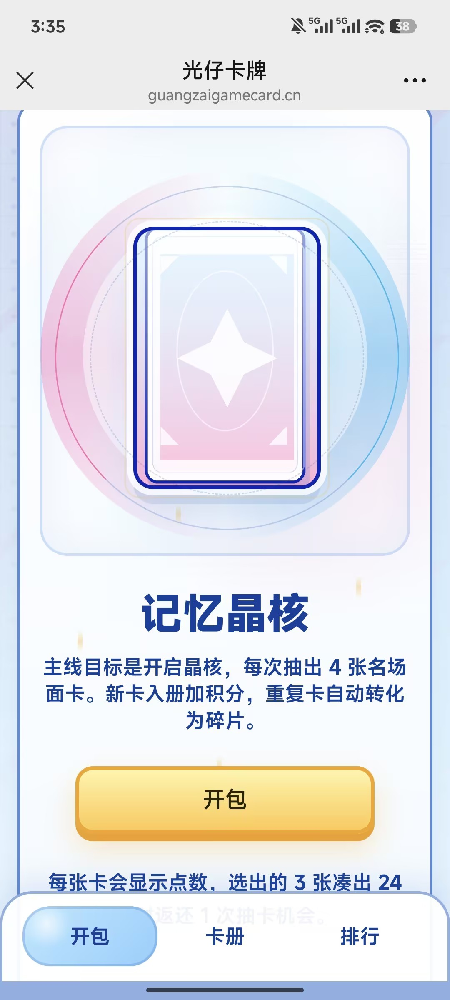
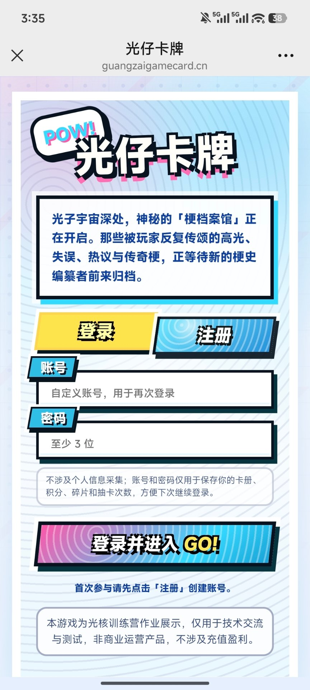
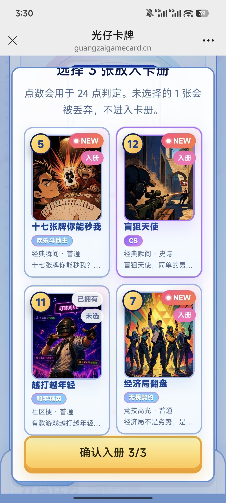
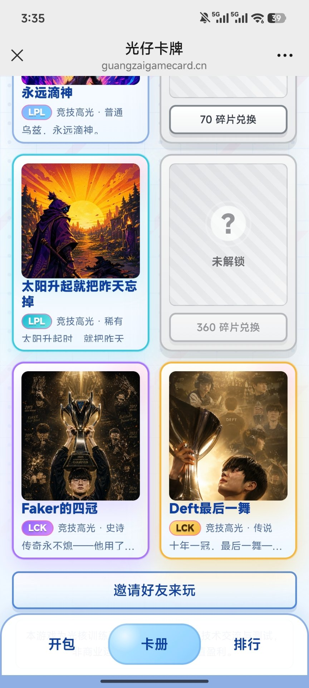
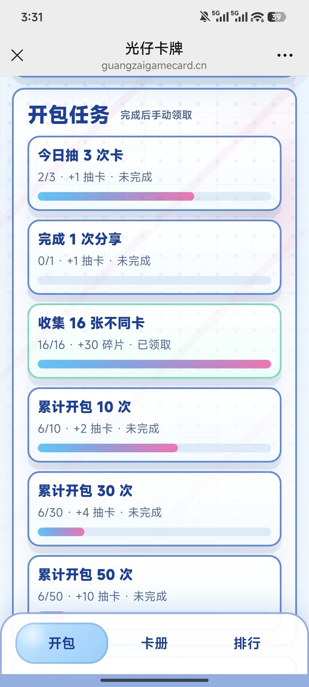
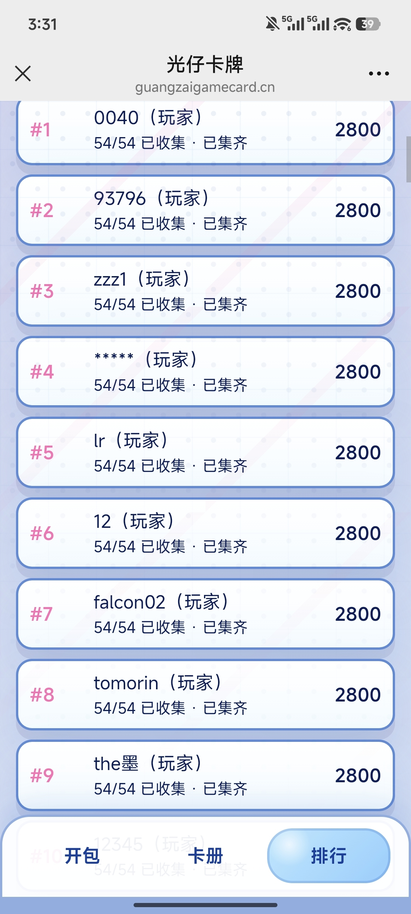

活动策划与玩法机制设计
面向光核社区活跃与拉新目标，参与《光仔卡牌》移动端 H5 活动策划与上线运营，围绕 10 款游戏 IP 设计 54 张社区梗卡牌内容。
搭建完整活动路径："抽卡—收集—补缺—竞争—分享—回访"



设计意图与成果
通过 H5 免下载入口、首次昵称设置、每日登录抽卡等设计降低用户参与门槛；通过"四选三 + 凑 24 点返还"强化单次抽卡的策略选择与即时反馈，通过图鉴收集、碎片兑换和隐藏彩蛋延长用户探索目标。
上线首日数据：
90 人参与 · 5,229 次抽卡 · 首次开启参与率 86.58%
验证活动入口引流效果与核心机制的短期吸引力。



独立完成活动数据复盘与优化
活动上线 8 天累计吸引 149 名用户参与，人均抽卡约 70 次，平均图鉴收集进度达 45.43%，彩蛋触发率达 38.93%。
独立产出活动复盘报告，分析用户参与留存、抽卡行为、图鉴收集、彩蛋触发与分享转化数据，针对问题提出迭代建议：
- Day 3 后活跃衰减 → 提出内容分批解锁策略
- 用户回流不足 → 设计关键节点召回机制
- 分享裂变规模有限 → 优化分享落地页设计
附录：完整策划文档
查看完整活动策划方案
一、活动概述
1.1 活动名称
暂定名称：《光仔卡牌》
副标题：——光子宇宙 · 名场面收集· 凑24点 · 彩蛋组合 · 社交裂变
1.2 活动主题
以游戏世界深处的「梗档案馆」为世界观背景，将玩家在游戏旗下热门游戏，如《和平精英》、《王者荣耀》、《英雄联盟手游》、《金铲铲之战》等经典代表中共同创造的经典瞬间、高光操作、趣味失误及社区热议凝聚成承载记忆的"梗卡牌"。活动以"四选三"卡牌收集与经典的"凑24点"数值玩法相结合。玩家化身「梗史编纂者」，在抽取卡牌的同时，通过策略组合卡牌临时赋予的"梗度值"来凑成24点，触发"满梗全席"以赢取额外奖励，并在收集过程中解锁隐藏的同游戏IP彩蛋组合。
1.3 活动形式
本次活动由五个部分组成：
- 卡牌抽取与"凑24点"H5主页：玩家消耗抽卡次数抽取4张卡牌并赋予1~13临时"梗度值"，通过"四选三"入库，若选出的三张卡牌点数通过加减乘除能凑出24，则触发「满梗全席」奖励
- 卡册系统与彩蛋收集：按游戏IP分类浏览54张卡牌（含普通/稀有/史诗/传说/隐藏五档稀有度），集齐同一游戏特定卡牌组合时，可自动触发隐藏的"彩蛋奖励"
- 碎片与兑换商店：选中的重复卡牌将自动转化为碎片，支持玩家在兑换商店中直接兑换未拥有的缺失卡牌
- 社交分享与好友互助：包含每日登录赠送、累计开包返还，以及极具裂变效应的"好友蹭包"和社交分享任务
- 积分排行榜：依靠新卡入册积累积分，展示总榜、自身排名及前十列表，支持排名分享
1.4 活动定位
本次活动是一款运行于移动端H5、免下载即开即玩的轻量化收集与策略组合活动。它在降低传统卡牌系统复杂度的同时，巧妙融合了低理解门槛的"24点"数值趣味性，以玩家共鸣的"游戏梗"为内容纽带，通过彩蛋探寻和互助分享机制，实现社区的高频互动与社交裂变。
二、活动背景
2.1 项目背景
本次小组任务要求围绕光核社区设计并落地一场能够吸引真实玩家参与、具备良好互动性和传播性的游戏运营活动。
活动通过引入10款热门游戏如《和平精英》、《英雄联盟手游》、《金铲铲之战》等的54张经典名场面和出圈梗制作成卡面，用玩家耳熟能详的内容激发情感共鸣；在开发与技术上，采用移动端 H5 形式，确保在有限的时间和团队能力下能够高质量落地，并产生真实的活动数据与用户反馈。
2.2 前期方向调整
项目初期曾尝试以复杂的"游戏策划职业成长"、"卡牌养成"和"轻策略玩法"作为H5核心，但面临系统过于庞杂、开发成本过高、用户理解门槛高等落地风险。
经过评估与方向调整，本次方案摒弃了繁琐的养成与对战机制，将游戏复杂度大幅降低，并向轻量化运营机制靠拢。方案重新设计了核心循环：将卡牌属性简化为抽卡时随机赋予的 1~13 临时"梗度值"，将玩法聚焦于"四选三入库"与"三卡凑24点"的纯策略益智环节。
三、活动目标
3.1 核心目标：提升社区活跃度
以「每日抽卡 + 图鉴收集 + 凑24点玩法」为游戏核心循环，结合社区晒卡、社区任务及分享机制，引导用户持续参与活动，提高光核社区整体活跃度。
- 提高用户日均访问次数
- 提升活动页面访问时长及停留时间
- 增加社区帖子浏览、点赞、评论等互动行为
- 建立持续性的社区活跃氛围
3.2 传播目标：实现用户裂变拉新
依托卡牌收集的展示价值和稀有卡获取的不确定性，结合分享奖励、好友助力、排行榜等玩法，鼓励用户主动将活动传播至QQ、微信等社交平台，形成社区外部传播。
3.3 内容目标：促进社区UGC生产
以卡牌内容和游戏IP为话题，引导玩家主动在社区创作和发布内容，持续丰富社区讨论氛围。
3.4 用户沉淀目标：培养持续参与习惯
活动采用每日登录奖励、抽卡次数恢复、图鉴收集、碎片兑换、隐藏彩蛋及排行榜等长期目标设计，引导用户持续回访。
四、目标用户
4.1 核心用户
核心用户为光核社区现有注册用户及社区活跃用户。该类用户对游戏资讯保持较高关注，熟悉多个游戏IP，愿意参与签到、抽奖等轻量化运营活动，对抽卡、集卡等成长玩法接受度较高。
4.2 次级用户
次级用户主要为各游戏玩家，包括《和平精英》《英雄联盟手游》《金铲铲之战》等产品用户，他们未必是光核社区的活跃成员，但对对应游戏IP具有较高兴趣。
4.3 潜在用户
潜在用户主要来自活动传播，包括QQ群、微信群、朋友圈、好友邀请及社区分享链接等外部渠道。
五、活动核心优势与驱动
5.1 低门槛参与
- 免下即玩：活动运行于移动端 H5 平台，无需下载，用户点击链接即可即时体验
- 新手友好引导：首次进入提供可跳过的世界观动画并直接进行昵称设置，系统自动赠送3次免费抽卡
- 直观规则：核心规则"开包四连抽 → 四选三"操作极简
5.2 随机奖励驱动
卡池共计54张卡牌，分为"普通/稀有/史诗/传说/隐藏款"五级稀有度。每次抽卡时，卡牌被随机赋予一个1至13的临时"梗度值"，让每一次抽卡都伴随着数学逻辑上的未知与惊喜。
5.3 收集目标驱动
- 图鉴进度分类：按游戏IP分Tab浏览，直观展示收集进度
- 隐藏彩蛋组合：集齐同游戏特定卡牌可触发隐藏彩蛋奖励
- 碎片保底机制：重复卡自动转化为碎片，可在兑换商店中补缺
5.4 每日任务驱动
- 稳定资源获取：每日首次登录获赠3次免费抽卡机会
- "凑24点"满梗全席：选出的三张卡牌点数凑出24，额外赠送1次抽卡机会
- 累计抽卡返还：开包达到一定数量即返还抽卡次数
5.5 分享助力驱动
- 好友"蹭包"裂变：玩家分享页面后，好友点击可"蹭包"，双方均获得资源
- 多维度分享卡片：提供"卡牌、排名、游戏入口"三类精美分享卡片生成
5.6 排行竞争驱动
新卡入库增加积分，排行榜高亮展示自身排名及前十列表，配合一键"分享排名"按钮，利用竞争心理刺激玩家持续冲榜。
5.7 社区内容承接
- 隐藏彩蛋社区共创：彩蛋组合信息不在界面标注，引导玩家在社区探索、分享攻略
- 梗文化二次传播：卡面采用"梗名称+游戏主色调+梗评语"设计，促进社区二次创作
六、活动核心玩法
6.1 游戏世界观
在游戏世界深处，存在着一座神秘的「梗档案馆」。这里收藏的不是英雄或装备，而是无数玩家共同创造的经典瞬间与传奇梗。每一次高光操作、离谱失误、社区热议与版本故事，都会凝聚成一张承载记忆的卡牌，被永久封存。馆藏共计54张卡牌，覆盖游戏旗下全部热门游戏。
6.2 核心玩法说明
- 抽卡与赋点（四选三）：玩家消耗1次抽卡机会，随机抽取4张卡牌，每张赋予1至13的临时"梗度值"，从中挑选3张入库，放弃1张
- 入库判定：新卡加入卡册并增加收藏积分；重复卡自动转化为碎片
- 满梗全席（凑24点）：选出的3张卡牌临时点数若能凑出24点，系统自动展示公式，额外奖励1次抽卡机会
6.3 卡牌稀有度
| 稀有度 | 说明 |
|---|---|
| 隐藏款 | 极其稀有，积分分值最高，终极追求 |
| 传说卡 | 数量极少，视觉表现最突出 |
| 史诗卡 | 较高收藏价值和获取难度 |
| 稀有卡 | 中后期卡册补完的主力目标 |
| 普通卡 | 数量较多，基础收集反馈 |
6.4 卡牌内容方向
馆藏共计54张卡牌，覆盖光子旗下10款热门游戏及通用社区梗：
- 《和平精英》：人体描边、伏地魔的胜利、信号枪骗局
- 《英雄联盟手游》：闪现撞墙、0-21的亚索、盲僧R闪失败
- 《金铲铲之战》：老八出局、空城连败、D牌上头
- 通用社区梗：非酋の自我修养、下次一定
七、抽卡次数获取机制
| 获取方式 | 数量 | 说明 |
|---|---|---|
| 每日登录 | 3次 | 最稳定资源路径，吸引每日回访 |
| 满梗全席 | 1次 | 凑24点成功额外奖励 |
| 累计开包返还 | 若干 | 达到指定数量返还抽卡次数 |
| 分享卡片 | 每日限次 | 分享各类型卡片获得 |
| 好友蹭包 | 每日限次 | 好友助力双向互利 |
| 隐藏彩蛋 | 3~5次 | 集齐特定卡牌组合触发 |
八、收藏积分与排行榜
8.1 收藏积分
积分是冲击排行榜的唯一指标。只有新卡入库时才会增加积分，积分值受卡牌稀有度影响（权重依次递增）。重复卡转化为碎片，不提供积分。
8.2 排行榜
MVP阶段设置一个核心排行榜——收藏积分排行榜。顶部高亮展示玩家自身排名，平铺展示前10位头部玩家，配合一键分享按钮。
8.3 排行榜展示
排行榜页面采用极简高反馈设计：
- 排行展示：顶部或首位高亮展示玩家自身的头像、昵称、当前积分及当前排名
- 前十列表：平铺展示排名前10位头部玩家的头像、昵称及总积分，提供强烈的竞争目标感
- 分享裂变：提供"分享排名"按钮，玩家可生成专属排名海报/卡片进行社交炫耀
8.4 排行榜激励
为了在提供竞争感的同时保障活动的公平性，规避头部作弊风险，本活动采取"展示与实际奖励机制分离"的策略：
- 排名展示：排行榜负责提供社交荣誉与竞争感，满足高活跃玩家的成就感
- 标准随机抽取（抽奖池）：实际的实物或大奖不与排行榜前几名直接挂钩。只要玩家收藏积分达到指定门槛即可自动解锁对应等级的奖励随机抽取资格
8.5 防作弊机制
- 全局状态管理：卡牌/积分/碎片/抽卡次数等敏感数据，统一由系统在全局状态管理中进行安全逻辑闭环，避免前端数据被篡改
- 次数与网络请求限制：分享获取抽卡次数、好友蹭包助力等接口在后端设立严格的"每日限次"和"同设备/同IP限制"检测
- 异常数据人工复核：排行榜后台建立异常积分增幅监控，并在最终大奖抽取前进行数据安全审计
九、社区运营机制
9.1 社区核心话题
活动统一设置官方话题，方便内容聚合及运营管理：
- #光核卡牌收藏计划#（活动主话题）
- 子话题：#我的光子IP卡牌# #今天抽到S卡了吗# #光核收藏家挑战# #今天凑24了吗# #隐藏彩蛋发现# #我的图鉴完成度# #欧皇还是非酋# #今日满梗全席#
9.2 用户内容生产（UGC）
鼓励玩家围绕活动持续发布内容，提高社区内容供给：
- 抽卡分享：首次抽卡结果、今日最佳卡牌、今日最差运气、单抽逆袭
- 收藏展示：当前图鉴完成度、新解锁卡牌、稀有卡展示、全IP收藏进度、彩蛋组合解锁
- 游戏讨论：最喜欢的光子IP、哪张卡牌最有梗、哪张卡最难抽、最希望加入的新角色
- 趣味内容：欧皇现场、非酋日记、今日凑24挑战、最离谱抽卡记录
9.3 官方推荐发布模板
为降低用户创作成本，活动提供统一发布模板，一键复制即可发帖：
我的光核收藏日报
收藏等级：___
当前图鉴：XX /54
今日新增卡牌：___
今日最高稀有度：___
今日是否触发彩蛋：___
今日是否凑出24点：___
我最喜欢的一张卡：___
我最想补齐的一张卡：___
同时支持自动生成：图鉴截图、抽卡截图、排行榜截图、分享海报
9.4 社区互动玩法
活动期间由官方持续组织社区互动：
- 每日互动：今日欧皇榜、今日非酋榜、今日隐藏彩蛋、今日最佳抽卡截图、今日满梗全席达人
- 趣味互动：猜卡牌剪影、猜经典名场面、猜游戏台词、猜隐藏彩蛋组合
9.5 内容运营节奏
整个活动采用分阶段运营策略，不同阶段输出不同类型内容。
十、传播与裂变设计
10.1 核心传播卖点
- 经典游戏IP卡牌：收录多款热门游戏经典角色、名场面及社区梗
- 稀有卡牌收藏：不同稀有度卡牌随机掉落，隐藏卡牌提高期待感
- 图鉴收集玩法：不断完善个人卡册，解锁隐藏彩蛋
- 收藏排行榜：展示个人收藏成果，与社区玩家共同竞争
- 好友互助机制：分享即可邀请好友助力，双方均可获得额外抽卡机会
- 社区互动体验：晒卡、讨论、竞猜、排行榜等丰富互动内容
10.2 传播渠道
- 社区内传播：依托光核社区现有流量资源，包括活动资讯、活动专题页
- 社区外传播：借助玩家社交关系链实现自然裂变。重点渠道：光核相关QQ群/微信群、QQ好友、微信好友、微信朋友圈、QQ空间、个人社交账号、小红书等公域平台
十一、活动周期设计
11.1 预热期——预期建立阶段
活动正式上线前1-2天进行预热，目的是建立心理预期。信息按梯度逐步释放：
- 第一天预告：发布卡牌剪影图，配合"猜猜这是哪个光子IP"社区投票
- 第二天预告：露出一张S级卡的局部画面，公布玩法节奏预告图
- 上线前：公布活动倒计时，配合"你准备好成为收藏家了吗"引导语
预热期核心设计原则：不给答案，只给线索，让玩家自己产生猜测和讨论。
11.2 正式活动期——五天五个驱动力阶段
活动期共5天，每天设置一个不同的核心驱动力，避免新鲜感衰减：
- 第一天：探索发现期（好奇心）——让首次进入的用户在30秒内完成"进入→抽卡→看到结果→收入图鉴"的完整闭环。运营发布正式活动帖，引导首次抽卡
- 第二天：晒卡互动期（展示欲）——把"我有卡"转化为"我想让别人看到我的卡"。官方推出"今日欧皇"展示帖，鼓励用户晒卡；运营重点增加点赞和评论，建立社交反馈回路
- 第三天：竞争觉醒期（竞争心）——公布阶段性排行榜（前50名展示），公布各IP收集热度排行和"最稀有卡牌拥有者"名单。设计要点：展示微小差距感更能驱动竞争行为
- 第四天：协作冲刺期（互惠心）——强化好友助力的活动入口和奖励提示，引导分享"我还差X张就集齐了"的收集进度。运营发布"缺卡互助帖"。驱动力从"我要赢"转换为"我们一起赢"
- 第五天：收官高潮期（完形冲动）——充分利用"差一点就完成"的心理张力。发布结束倒计时，推送个性化提醒，公布全服图鉴补全攻略和最后冲刺指南
11.3 收尾期——数据闭环与活动回顾
- 用户侧：向每位参与者推送"我的收集报告"——首张卡牌、最高稀有度收获、总积分、图鉴完成度、最终排名、好友助力次数
- 全服侧：公布全服趣味数据盘点——最热门卡牌、最难抽卡牌、最高积分、最欧玩家、最非玩家、最受欢迎IP等
- 运营侧：整理活动复盘，梳理参与数据、社区内容数据和传播数据。同时为后续活动埋下伏笔
十二、奖励与用户激励
12.1 即时反馈层
每次抽卡是一次完整的"行动-反馈-奖励"微循环，反馈流程：
点击开启晶核 → 四张卡牌平铺展示（左上角金色临时"梗度值"） → 玩家选择三张 → 翻转入库动画 → 新卡/重复卡判定 → 系统自动计算24点公式 → 触发"满梗全席"动画 → 卡册状态更新。整条反馈链控制在2秒以内。
稀有度反馈梯度：
- 普通/稀有卡：基础翻转动画加点数提示，反馈平稳
- 史诗/传说卡：专属色调粒子光效，积分较大幅度增长的滚动动画
- 隐藏款：全屏粒子特效，华丽弹出卡牌立绘、梗名及特制评语，分享按钮自动弹出
12.2 短期目标层
- 每日签到/登录：每日首次登录赠送3次免费抽卡。连续登录第3天和第5天设置额外"连续抽卡返还"
- 玩法内保底反馈："凑24点"作为日常高频微目标，即使运气不好也能通过凑24点获得追加抽卡机会
12.3 中期成长层
- 卡册收集进度：集卡进度达到25%、50%、75%、100%节点时，解锁对应的视觉回馈（卡册背景升级、专属收集框样式、全图鉴达成特效）
- 隐藏彩蛋探索：集齐同游戏的特定梗卡组合，解锁彩蛋成就并即时触发2~5次抽卡机会或额外碎片奖励
- 碎片商店保底：重复卡转化的碎片可在兑换商店中直接换取缺失的卡牌，提供确定性成长路径
12.4 长期激励层
- 总积分排行榜：不重置的累计积分总榜，前10名、前50名、前100名各有不同高亮展示层级
- 实物或官方奖励：采用"积分达标进入大奖池，随后随机抽取"的规则，兼顾公平与参与积极性
十三、视觉设计方向
13.1 视觉定位
整体视觉风格确立为波普美漫艺术风（Pop Art），体现年轻、动感、强冲击力：
- 高饱和度撞色：采用极高饱和度桃红色（Magenta）与天蓝色（Cyan）梯级渐变撞色
- 美漫拟声元素：引入复古漫画风格的爆裂对话框、漫画字体、闪电与五角星等动感符号
- 半色调网格背景：界面铺设经典的半色调圆点网格（Halftone Dots）
- 粗黑描边墨线：所有UI组件均采用粗重黑色墨线描边，结合偏置阴影（Offset Shadow）
13.2 核心页面
美术组需按照波普艺术风格统一输出以下H5核心页面：
- 世界观宣传页：梗档案馆场景，融入波普风爆裂动效与主Logo
- 登录与昵称录入页：半色调蓝色圆点背景，撞色双Tab，粗黑墨线输入框
- 抽卡主页面（Tab1）：中央为记忆晶核，四周辅以霓虹闪电动效
- 卡牌挑选与翻转页：4张卡牌排列，"四选三"高亮选中框
- 抽卡结果页（结算弹窗）：新卡/重复卡转碎片弹窗，"满梗全席"24点公式爆炸框
- 个人卡册页（Tab2）：10款游戏IP专属分签，未拥有卡牌呈复古网点置灰状态
- 兑换商店页（Tab3）：54张卡牌网格，高对比度碎片余额显示
- 排行榜页（Tab4）：排名滚动列表，玩家自身数据行桃红色高亮
- 好友蹭包页（分享落地页）：带有玩家生成的蹭包爆裂按钮
- 活动规则页：粗重墨线排版的弹窗，清晰展现核心规则
十四、技术实现方案
14.1 Plan A：后端完整版本
技术实现基于全面的服务器端存储与状态控制：后端基于OpenID识别用户，在云数据库保存54张卡牌的所有权及碎片余额；服务器端验证每日登录、蹭包上限；核心算法全部在服务器端完成，保障数据安全性。
优点：防作弊能力强，可获得高价值运营数据。
风险：H5端跨平台分享API调试时间紧张，高并发下24点求解运算可能存在性能堆积风险。
14.2 Plan B：纯前端兜底版本
若后端遇到联调瓶颈，可紧急切换至纯前端兜底方案：卡牌入库、碎片余额改用加密前端LocalStorage；关闭实时排行榜，改为展示本地卡册完成度；好友蹭包降级为生成分享截图。
优点：摆脱服务器环境限制，保证核心体验能按时上线。
14.3 开发优先级
- 第一优先级：前端页面（登录/昵称/抽卡/卡册）+ 核心逻辑（四连抽赋点、四选三、24点求解器）
- 第二优先级：后台数据（云端存储、每日登录）+ 兑换系统 + 社区配套（累计返还、彩蛋检测）
- 第三优先级：社交裂变（排行榜、蹭包、分享海报）+ 安全稳定（防作弊、低端设备适配）
十五、运营执行安排
15.1 策划组（3人）
- 主策划（白俊杰）：活动整体框架、核心循环及系统逻辑搭建与统筹；对接美术、开发及运营组
- 文案设计（胡钰颖）：54张卡牌文案、彩蛋命名、昵称池/引导/世界观文案
- 数值设计（罗承乾）：卡牌稀有度分布、抽取概率、积分与碎片数值规则
15.2 美术组（4人）
- 世界观宣传页设计、活动主Logo
- 54张卡面插画绘制、10款游戏IP主色调视觉卡板
- 5级稀有度卡牌外框模板
- 抽卡交互动效、UI组件及宣传物料、3类分享卡片模板
15.3 开发组（4人）
分三阶段推进：
- 阶段一（核心骨架）：项目初始化、卡牌数据模型、核心玩法实现、6个页面框架
- 阶段二（功能完善）：每日登录、累计返还与彩蛋、碎片兑换、排行榜
- 阶段三（社交打磨）：分享卡片、好友蹭包、新手引导与适配降级
15.4 运营组（3人：胡钰颖、莫陈杰峰、马铭远）
- 社区活动节奏：制定预热、上线及收尾三阶段的社区推广节奏
- 传播链路设计：设计"好友蹭包"互助链路，制作引导话术；设计排行榜炫耀和晒单机制
- 内容与话题运营：撰写各阶段宣传文案；发起互动话题，引导玩家撰写集卡攻略
- 数据监控与复盘：实时监控PV/UV、分享转化率等数据；收集反馈；完成活动复盘
十六、风险与应对
16.1 技术实现风险
根源：核心循环完整性风险。如果抽卡不能运行，一切后续系统全部失效。
应对：按功能紧急性切割——P0（必须可用）：抽卡、图鉴、积分计算。P1（可降级）：排行榜、好友助力。准备纯前端兜底版本。
16.2 IP素材使用风险
根源：主题保真度受限。
应对：提前确认可用IP范围；准备通用卡牌模板作为备选；所有素材来源做好记录。
16.3 排行榜公平性风险
根源：竞争系统公信力受损。
应对：采用"积分达标后进入奖励抽选池"替代纯排名发奖；设置行为检测机制；排行榜名次作为荣誉展示，不直接作为唯一发奖依据。
16.4 用户不进入社区
应对：在抽卡结果页嵌入"查看社区讨论"入口；将部分任务绑定在图鉴浏览路径中，从图鉴页也能自然进入社区。
16.5 分享行为引起用户反感
应对：让分享物本身具有展示价值——稀有卡截图、榜单名次卡片等。分享奖励作为赠予而非报酬，设置每日上限避免骚扰。
16.6 用户抽不到稀有卡产生挫败
应对：三层保护机制——第一层：首次抽卡保底至少A级；第二层：保底计数器，累计N次未出S级则概率递增；第三层：碎片兑换提供确定性路径。
16.7 活动周期过短风险
应对：每天驱动力不同（五天动机设计）；第3天设置主动唤醒机制，向未登录用户推送个性化消息。
16.8 活动中期参与热情断层风险
应对：三个层面刷新中期体验——内容门控（第3天解锁限定卡）、驱动力切换（话题从"收集"转"表达"）、数据驱回（个性化推送）。
16.9 经济系统失衡风险
应对：免费抽卡次数控制在合理区间；碎片兑换定价高于重复转化量；保留动态调整空间，第3天结束时根据数据评估。
十七、项目时间节点
| 时间 | 任务 |
|---|---|
| 6月23日 | 确定活动方向；明确职能分工；向导师同步方案调整 |
| 6月24-25日 | 完成活动方案；完成卡池与规则设计；完成首版UI风格；完成后端技术可行性测试 |
| 6月26日-7月10日 | H5功能开发；卡牌美术制作；社区内容准备；内部测试；修复问题 |
| 7月13日左右 | 正式上线活动；发布社区活动帖；开始用户数据收集 |
| 7月13-18日 | 持续运营活动；发布榜单、晒卡和趣味数据；收集用户反馈 |
| 7月19日左右 | 统计活动结果；审核排行榜；完成数据分析；输出活动复盘；整理Pre展示材料 |
十八、预期成果
- 一份完整的社区运营活动方案：融合"游戏宇宙"世界观及10款热门游戏IP的完整策划方案
- 一个可运行的抽卡收集H5：适配移动端、即开即玩的完整H5程序，支持6个核心页面闭环运行
- 一套光子IP卡牌视觉素材：54张卡面插画、10款游戏IP视觉卡板、5级稀有度卡牌外框、UI动效组件
- 一套社区宣传和分享物料：3类动态生成的专属社交分享卡片、社区宣传海报、日常话题引导海报
- 一套用户任务、传播和排行榜机制：包含每日登录、累计返还、彩蛋解锁、好友蹭包等完整社交闭环机制
- 一份真实用户参与数据：H5页面PV/UV、人均抽卡次数、卡册收集比例、24点成功概率等核心数据
- 一份用户反馈及活动复盘：收集整理玩家在各维度的真实评价与建议
- 一份结营Pre展示方案：汇总全队14人在策划、美术、开发、运营各环节的产出，制作汇报演示文稿
十九、数据指标
19.1 参与与留存数据
- H5流量与入驻率：PV/UV、首进动画跳过率、昵称设置成功率
- 核心循环转化：首次开包参与率、"四选三"完成率、临时点数分布监测
- 玩法增益成效：凑24点尝试次数、"满梗全席"触发率、额外抽卡点击率
- 留存与回访频次：每日登录3次领取率、日均/人均抽卡次数、次日留存与连登率
- 收集完成情况：人均获得卡牌张数、54张总图鉴平均收集进度
19.2 社区与传播数据
- 官方帖表现：浏览量、点赞量及评论量
- 话题讨论热度：互动话题发帖量与社区互动率
- 玩家自发交互："求赠卡/求换卡/求蹭包"等用户自发发帖数
- 社区大盘活跃：活动期间DAU增长幅度
- 分享卡片效能：3类分享卡片的分享按钮点击量、生成数量及裂变点击率
- 好友蹭包指数：蹭包链接分享率、好友助力次数
- 裂变拉新系数：通过分享和蹭包带来的新增用户数
19.3 排行榜数据
- 冲榜竞争程度：参与排名用户规模、平均积分及分值区间分布
- 冲榜回访特征：头部及中高分用户冲榜期间日均回访频次
- 安全审计指标：异常积分增长标记用户数、防刷拦截触发次数
二十、项目核心总结
本次活动以《光仔卡牌》为内容吸引点，以"四选三"及"凑24点（满梗全席）"提供强有力的微决策与即时惊喜，以卡册图鉴和总积分排行榜促进重复参与，以每日登录和"好友蹭包"机制扩大社交裂变，最终以光核社区内的晒公式、挖彩蛋和梗吐槽话题实现用户长效回流。
活动的价值不在于制作一款繁琐的卡牌对战游戏，而在于利用轻量化、自适应的H5页面建立起一条逻辑完整、环环相扣的社区运营链路：
游戏梗与IP吸引核心玩家进入 → 每日登录赠3次抽卡降低参与门槛 → 临时点数凑24点"满梗全席"提供即时反馈与趣味策略 → 54张卡册收集进度驱动中短期重复访问与攻略探索 → 兑换商店碎片保底对冲挫败感提升留存 → 好友蹭包与三类卡片分享促进社交裂变 → 排行榜荣誉与社区话题持续拉动UGC → 反作弊防御与数据复盘闭环检验活动效果
查看完整活动复盘报告
一、活动概述
| 项目 | 内容 |
|---|---|
| 活动名称 | 《光仔卡牌》 |
| 活动类型 | 卡牌收集 / 数值组合 / 轻量休闲 / 社交裂变 |
| 运行平台 | 移动端H5（自适应响应式，免下载即开即玩） |
| 活动周期 | 2026年7月13日 - 7月20日（共8天） |
| 策划团队 | 薛定谔的日活（14人） |
核心玩法
玩家消耗抽卡次数开启「记忆晶核」，随机抽取4张卡牌（各赋予1-13临时梗度值），四选三入库：新卡入册并增加收藏积分；重复卡自动转化为碎片；选出的3张卡牌若能凑出24点，触发「满梗全席」额外奖励1次抽卡。
二、数值设计回顾
2.1 卡池设计
| 稀有度 | 每种类数量 | 总计 | 说明 |
|---|---|---|---|
| 隐藏款 | 2张 | 2张 | 无种类区分，极其稀有 |
| 传说 | 1张 | 约10张 | 数量极少，积分最高 |
| 史诗 | 2张 | 约20张 | 较高收藏价值 |
| 稀有 | 3张 | 约30张 | 中等获取难度 |
| 普通 | 7张 | 约70张 | 基础收集反馈 |
2.2 每日资源获取
| 获取方式 | 数量 | 说明 |
|---|---|---|
| 每日登录 | 3次 | 最稳定资源路径 |
| 开包返利（10/30/50次） | 2/4/10次 | 累计开包返还 |
| 分享 | 1次 | 每日分享卡片获得 |
| 好友蹭包 | 1次 | 好友助力双向互利 |
每日基础可获取抽数：5次。玩家保底数值约为60抽。
三、核心数据表现
3.1 参与与留存总览
| 核心指标 | 数据 | 说明 |
|---|---|---|
| 总参与用户 | 149人 | 活动周期内注册用户总数 |
| 首次开启参与率 | 86.58% | 129/149人至少抽卡一次 |
| 昵称设置成功率 | 100% | 所有进入用户均完成设置 |
| 人均抽卡次数 | ~70次 | 总抽卡/活跃用户 |
| 人均拥有不同卡牌 | 24.53张 | 平均收集卡牌数 |
| 图鉴平均收集进度 | 45.43% | 24.53/54张 |
| 彩蛋触发率 | 38.93% | 58人次触发过彩蛋 |
3.2 每日活跃趋势
| 日期 | 抽卡总次数 | 活跃用户数 | 人均抽卡 |
|---|---|---|---|
| 7月13日（首日） | 5,229 | 90 | 58.10 |
| 7月14日 | 3,516 | 45 | 78.13 |
| 7月15日 | 144 | 6 | 24.00 |
| 7月16日 | 6 | 1 | 6.00 |
| 7月17日 | 96 | 4 | 24.00 |
| 7月19日 | 69 | 4 | 17.25 |
| 7月20日 | 15 | 1 | 15.00 |
趋势分析：
- 首日表现强劲：90人参与（占总用户60.4%），产生5229次抽卡，活动初始吸引力充足
- 次日留存约50%：45人回访，人均抽卡高达78次，核心用户深度参与
- Day3后快速衰减：活跃用户降至个位数，有效活跃窗口集中在前2天
- 长尾微量活跃：Day5-8仍有少量用户回访，核心玩法对部分用户仍有持续吸引力
3.3 社区传播数据
| 分享类型 | 生成次数 | 外部访问 | 点击率 |
|---|---|---|---|
| 排名分享 | 85 | 16 | 18.82% |
| 卡牌分享 | 38 | 6 | 15.79% |
| 邀请分享 | 24 | 4 | 16.67% |
| 合计 | 147 | 26 | 17.69% |
排名分享是主要传播动力（占总分享57.8%），竞争心理驱动分享意愿。整体点击率约17%，裂变规模有限，需优化分享落地页转化率。
3.4 排行榜数据
共129人参与积分排名。积分分布呈两极分化：33人达到满分2800分（约占25.6%），中间段分布较为均匀。
| 积分区间 | 用户数 | 占比 |
|---|---|---|
| 0-99分 | 12 | 9.3% |
| 100-299分 | 13 | 10.1% |
| 300-499分 | 25 | 19.4% |
| 500-999分 | 21 | 16.3% |
| 1000-1999分 | 12 | 9.3% |
| 2000分以上 | 40 | 31.0% |
| 满分2800分 | 33 | 25.6% |
3.5 彩蛋触发数据
活动设置9个隐藏彩蛋组合，整体触发率38.93%。各彩蛋组合触发率在23%-33%之间，分布较为均匀，说明卡牌组合设计合理。
| 彩蛋组合 | 触发人数 | 触发率 |
|---|---|---|
| 金铲铲之战 | 49 | 32.89% |
| 和平精英 | 47 | 31.54% |
| 英雄联盟手游 | 46 | 30.87% |
| 赌徒一无所有 | 44 | 29.53% |
| 不朽传说 | 43 | 28.86% |
| 再救我一次 | 42 | 28.19% |
| 老六自我修养 | 41 | 27.52% |
| 队友是老板 | 39 | 26.17% |
| 传说永不消逝 | 35 | 23.49% |
四、亮点总结
- 首日参与率高，玩法吸引力强：首次开启参与率达86.58%，H5免下载即开即玩的低门槛设计有效，「四选三」核心规则直观易懂
- 核心循环粘性强：人均抽卡约70次，远超每日基础赠送的5次上限。次日留存用户人均抽卡高达78次
- 彩蛋系统驱动效果明显：38.93%的用户触发过彩蛋，9个彩蛋组合触发率均在23%-33%之间，平衡性良好
- 排名分享成为传播主力：排名分享占总分享量的57.8%，验证了竞争心理对分享行为的驱动作用
- 图鉴收集目标可达成：人均收集24.53张（45.43%），25.6%用户达到满分，说明卡池容量设计合理
五、优化方向
5.1 用户留存机制待加强
Day2留存约50%，Day3后活跃用户骤降至个位数。有效活跃窗口仅集中在前2天。
优化建议：
- 增加每日限定内容解锁（如每日新卡发布、限时彩蛋）
- 设置连续登录累计奖励，强化断签损失感
- Day3/Day5设置关键节点推送召回提醒
- 分阶段释放卡池内容，避免首日即可大量抽满
5.2 社交裂变规模有限
总分享147次、外部访问仅26次，裂变系数偏低。
优化建议：
- 优化分享卡片视觉设计，提升社交平台展示吸引力
- 增加「稀有卡获得」自动触发分享引导
- 强化蹭包机制的双向激励，提高好友参与动力
- 考虑增加社区内互动分享路径
5.3 资源投放节奏可优化
次日人均78次抽卡说明资源获取速度过快，用户可在短时间内大量消耗内容。
优化建议：
- 适当收紧每日免费资源上限
- 增加时间门控机制（如分时段解锁新卡池）
- 将部分资源与社区行为绑定（发帖/评论换取抽卡次数）
六、总结
《光仔卡牌》作为光核社区的IP卡牌收集H5活动，在8天的活动周期内验证了以下核心假设：
- 玩法验证成功：「四选三 +凑24点」的核心循环具有极强的即时吸引力和沉浸感，86.58%的首日参与率和人均70次抽卡证明了轻量化策略玩法在社区运营场景中的可行性
- 内容策略有效：基于10款光子游戏IP的54张梗卡牌设计引发了用户共鸣，45.43%的图鉴收集进度和近40%的彩蛋触发率说明游戏IP内容与收集玩法的结合方向正确
- 留存与裂变是核心瓶颈：活动虽在短期内激发了高强度参与，但未能形成持续回访习惯。Day3后活跃骤降、裂变总量有限是后续迭代需重点突破的方向
后续建议：
- 延长有效活跃期：通过内容分批解锁、每日限定、连续奖励等机制拉长用户生命周期
- 强化社交链路：优化分享体验、增加社区联动任务、降低蹭包参与门槛
- 控制消耗节奏：避免用户短期内耗尽内容，保持长线目标感
- 数据能力建设：增加用户行为埋点，支持更精细的留存和转化分析